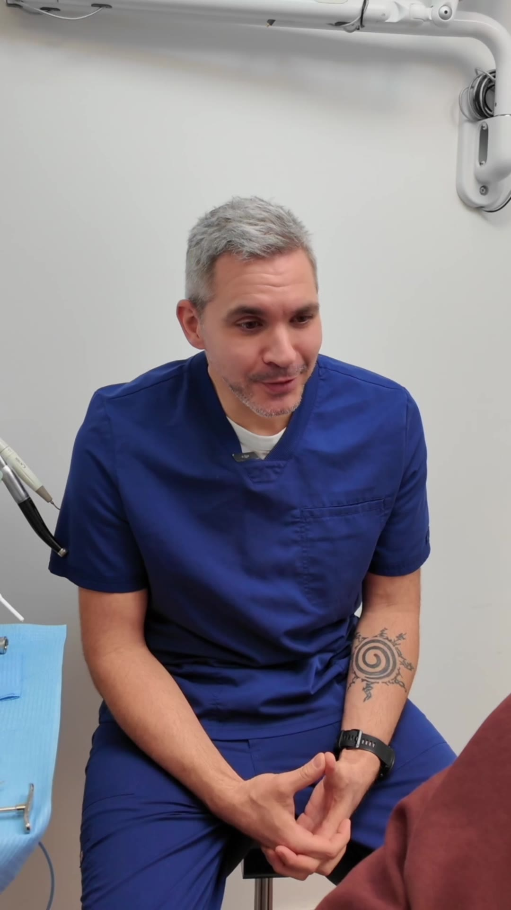
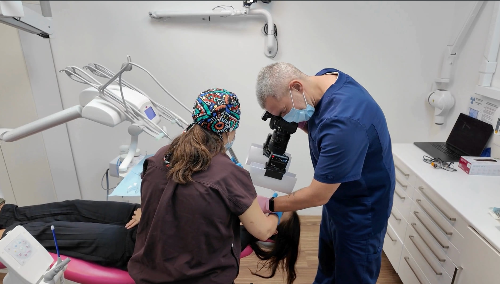
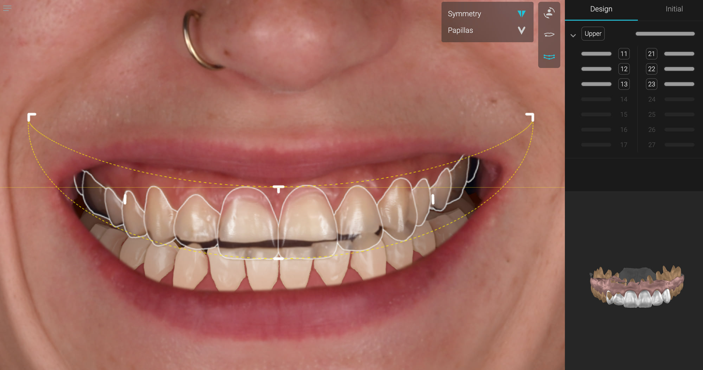
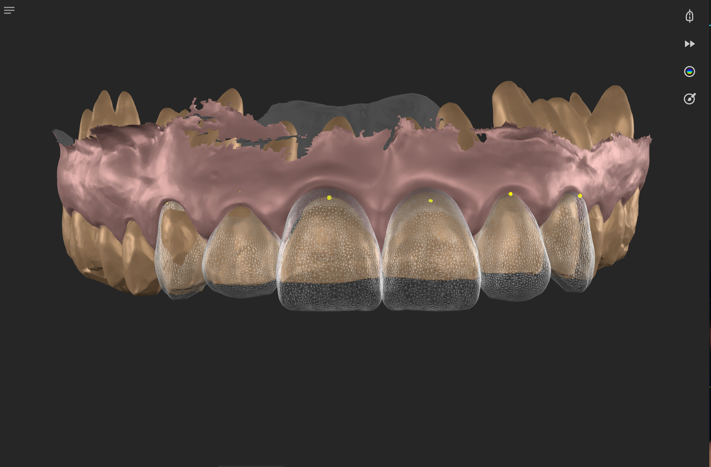
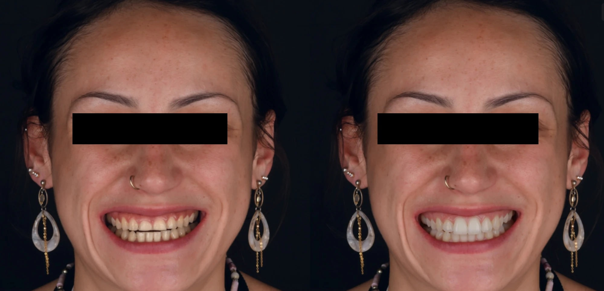

Accueil › Patient › Bilan esthétique
La consultation
Bilan esthétique
Première consultation
Un bilan esthétique transforme une demande parfois imprécise — dents trop courtes, sourire asymétrique, teinte, formes ou simplement envie de changement — en projet clinique. Il associe l’écoute, la photographie, le scan 3D et la planification. Selon les cas, une simulation 2D, 3D ou dynamique permet de comparer plusieurs directions avant de choisir ensemble le traitement.

Praticien hospitalier, Pitié-Salpêtrière · CMME, Sainte-Anne
1 / 5
Qu’est-ce qu’un bilan esthétique dentaire ?
C’est une consultation qui transforme une demande parfois imprécise (dents trop courtes, sourire asymétrique, teinte, envie de changement) en projet clinique compréhensible. On écoute, on photographie et on scanne, on analyse le sourire dans le visage, puis on planifie et on simule avant de décider ensemble du traitement.
Une consultation esthétique n’est pas une liste de traitements
Un patient ne vient pas forcément demander « une facette » ou « un composite ». Il vient souvent parce qu’il trouve ses dents trop courtes, son sourire asymétrique, sa teinte trop sombre, certains espaces gênants, ses dents trop petites ou simplement parce qu’il aimerait quelque chose de différent sans savoir exactement quoi.
Que regarde-t-on pendant un bilan esthétique ?
Bien davantage que les dents seules
Le sourire se lit dans son environnement. L’analyse peut intégrer le visage, les lèvres, la dynamique du sourire, la ligne du sourire, les proportions dentaires, les axes, les volumes, les couleurs, les asymétries, l’exposition gingivale et les rapports fonctionnels lorsque nécessaire.
L’objectif est de comprendre ce qui doit réellement changer pour produire l’effet esthétique recherché.

En vidéo · 42 sLa première consultation esthétiqueVoir la vidéo →
2 / 5
Comment se déroule un bilan esthétique ?
En sept étapes, de l’écoute de votre demande à la décision prise ensemble ; le traitement ne vient qu’en dernier, et seulement lorsque son bénéfice est réel.
Du projet au traitement : sept étapes
- Écouter attentes, gêne, objectifs.
- Documenter photographies, scans 3D, examens nécessaires.
- Analyser esthétique, fonction, tissus, causes.
- Planifier construire les formes, les proportions et les options thérapeutiques.
- Simuler visualiser le projet en 2D, 3D ou en dynamique selon les cas.
- Décider ensemble comparer les options, leurs avantages, leurs limites et le niveau d’intervention.
- Traiter uniquement lorsque le bénéfice est réel.
Première étape : écouter
Deux patients avec exactement la même situation clinique peuvent souhaiter deux résultats très différents.
Certaines personnes recherchent une amélioration discrète, davantage de lumière et un résultat très naturel. D’autres souhaitent une véritable transformation esthétique, des proportions plus affirmées ou un sourire beaucoup plus présent.
Le projet doit donc partir du patient, pas d’une forme de dent prédéfinie.
Deuxième étape : documenter
Selon le cas, le bilan peut associer :
Cette documentation permet de raisonner sur des données reproductibles plutôt que sur une simple impression au fauteuil.
- photographies cliniques calibrées ;
- portraits ;
- vidéos du sourire ;
- scan intra-oral 3D ;
- radiographies lorsque nécessaires ;
- analyse des tissus ;
- analyse fonctionnelle si pertinente.
Troisième étape : planifier
Le traitement se choisit après le projet
Une fois le sourire analysé, plusieurs solutions peuvent parfois produire un résultat proche avec des niveaux d’intervention différents : éclaircissement seul, éclaircissement + composite, composite bonding, facettes, infiltration de résine ou combinaison de plusieurs techniques.
Le bilan sert donc également à replacer les options dans un gradient thérapeutique.
La question n’est pas seulement : « Quel traitement peut-on faire ? » mais « Quel traitement permet d’obtenir le résultat recherché avec le niveau d’intervention le plus pertinent ? »

3 / 5
Qu’est-ce que le smile design, et peut-on voir son futur sourire ?
Le smile design est une planification numérique du sourire, réalisée à partir de photographies et de données 3D. Il permet de voir et de discuter un projet avant de commencer, sans en garantir le résultat exact.
Dans ma pratique, j’utilise notamment SmileCloud. À partir de photographies et de données numériques, l’outil permet de travailler sur les formes, les proportions, les longueurs, l’intégration faciale, une référence 3D et certaines simulations vidéo.
SmileCloud présente actuellement ses fonctions comme permettant notamment un design du sourire aligné sur le visage, l’intégration de données 3D et des simulations visuelles destinées à faciliter la communication avec le patient.
Cas cliniqueVoir le projet avant de le réaliserSimulation numérique d’une réhabilitation esthétique étendue, puis vingt facettes en céramique.
Peut-on réellement voir son futur sourire avant de commencer ?
On peut surtout voir et discuter un projet
Une simulation n’est pas une photographie contractuelle du futur résultat. Sa valeur est ailleurs : elle permet de rendre une idée visible.
Le patient peut alors dire : « trop long », « trop blanc », « j’aime cette forme », « je veux quelque chose de plus naturel », « je préfère cette version ».
Au lieu que l’esthétique soit décidée uniquement par le praticien et le laboratoire, elle devient une décision partagée.
Les revues récentes consacrées au Digital Smile Design rapportent des effets favorables sur la communication, l’acceptation et certains résultats centrés sur le patient, même si la littérature reste hétérogène et encore limitée.

4 / 5
Pourquoi planifier, même quand le traitement paraît simple ?
Parce qu’une petite modification peut changer l’équilibre de l’ensemble : allonger deux incisives ou fermer un espace peut modifier les proportions, la symétrie et la ligne du sourire. La planification évite de traiter dent par dent sans vision globale.
Comment cette démarche influence-t-elle le résultat ?
Elle permet de séparer deux moments :
1. décider ce que l’on veut obtenir
2. décider comment on va l’obtenir
Une fois le projet esthétique défini, le composite, la céramique, l’éclaircissement ou l’infiltration deviennent des outils au service du résultat, et non l’inverse.

5 / 5
Le bilan esthétique engage-t-il à faire un traitement ?
Non. Il peut aboutir à un traitement, à plusieurs options, à une surveillance, ou simplement à la conclusion que rien d’important ne doit être modifié.
Questions fréquentes
Dois-je savoir ce que je veux avant de venir ?
Non. Le bilan sert justement à mettre des mots et des images sur votre demande : trop court, trop sombre, asymétrique, ou simplement « autrement ».
Que se passe-t-il pendant la consultation ?
Un échange sur ce qui vous gêne, puis des photographies, un scan 3D du sourire et, si besoin, des radiographies. L’analyse et la planification suivent ; selon les cas, une simulation en 2D, 3D ou en vidéo permet de comparer plusieurs directions avant de décider ensemble.
Peut-on comparer plusieurs sourires ?
Oui. Plusieurs propositions peuvent être simulées et discutées : plus naturel ou plus transformé, plus long, plus lumineux. Le choix se fait sur des images, pas sur des mots.
La simulation garantit-elle le résultat ?
Non. C’est un outil de planification et de communication. Le résultat réel dépend de la biologie, des matériaux, des contraintes cliniques et du traitement choisi.
Faut-il apporter quelque chose ?
D’anciennes photographies de votre sourire sont précieuses : elles montrent comment les dents ont changé. Apportez aussi vos radiographies récentes et la liste de vos traitements en cours, si vous en avez.
Quand connaîtrai-je le prix du traitement ?
À l’issue du bilan. Le prix est établi de manière personnalisée, selon le traitement choisi ensemble, et vous est remis après le bilan, avant tout engagement.
Votre sourire ne devrait pas commencer par le choix d’un matériau
Il devrait commencer par une question : qu’est-ce que vous souhaitez réellement changer ?
Prendre rendez-vousSources scientifiques
Les références ci-dessous soutiennent les principaux messages cliniques de cette page.
- [1] Alwabel LK, Alabduljabar WM, Alawfi LK, et al. Digital Smile Design and Patient-Centered Outcomes in Esthetic Restorative Dentistry: A Systematic Review. Cureus. 2025;17(11):e98084.
- DOI : 10.7759/cureus.98084PubMed
- Saini RS, Kaur K, Gurumurthy V, et al. Impact of artificial intelligence-based digital smile design on patient and clinician satisfaction and facial esthetic outcomes: A systematic review and meta-analysis. Digit Health. 2025;11:20552076251388392.
- DOI : 10.1177/20552076251388392PubMed
- Source fonctionnelle — SmileCloud : https://smilecloud.com/fr/